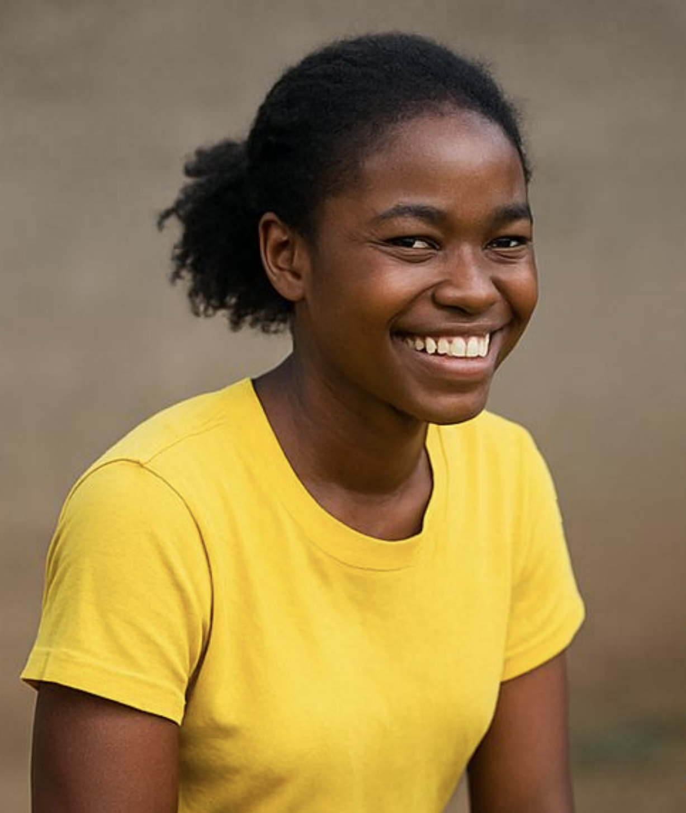

We believe in the energy and passion of young people. With your help, we can build a wave of change through small efforts that lead to lasting impact.
Before a Charity: Water project reached her village, Amina walked hours for unsafe water. Now, she spends her time in school, smiling with clean water close to home.
100% of your donation goes directly to water projects. You'll receive updates, photos, and GPS of the exact community you helped.
Give WaterWhether it’s your birthday, graduation, or a group challenge — turn any event into a way to bring clean water to those in need.
Fundraise Now